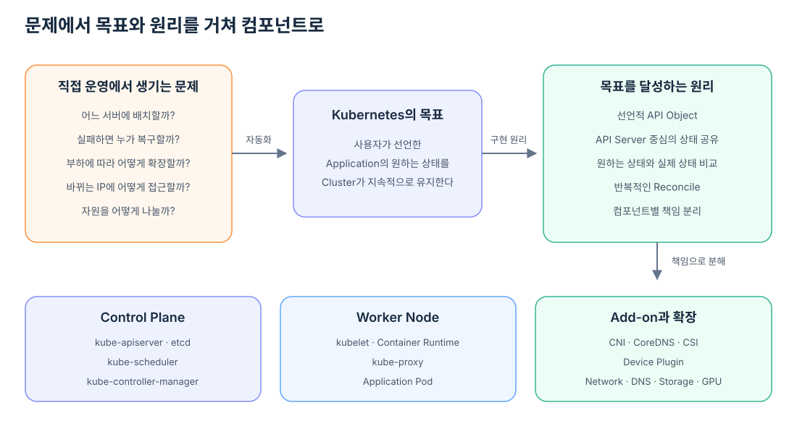
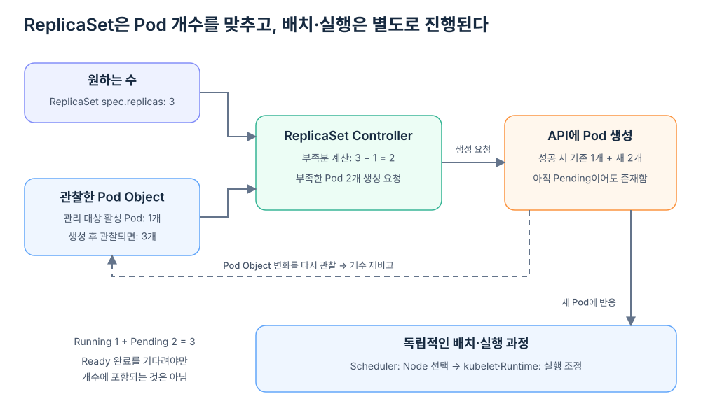
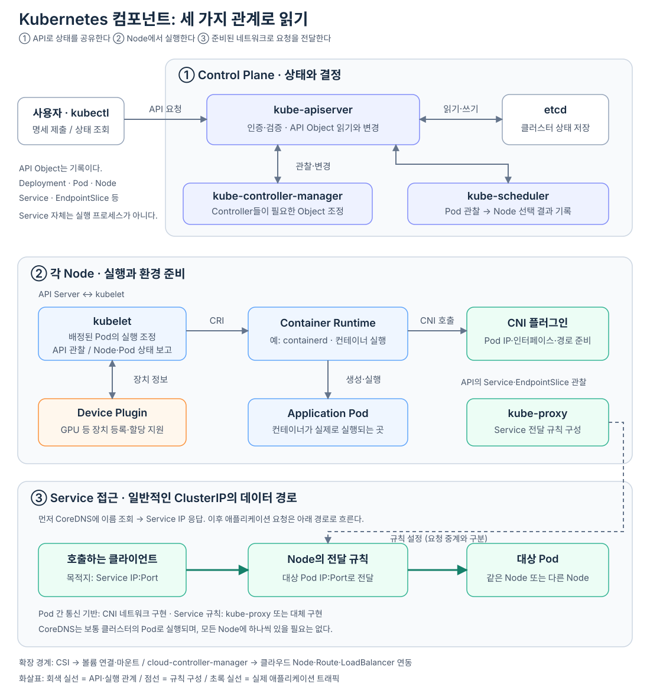

Container 하나를 실행하는 일은 어렵지 않다. Image를 준비하고 Container Runtime에 실행을 요청하면 된다. 서버 한 대와 Application 하나만 관리할 때는 이 방식으로도 충분하다.
문제는 운영 규모가 커질 때 시작된다. Application이 여러 개가 되고 서버도 여러 대가 되면 사람은 매번 어느 서버에 여유 자원이 있는지 판단해야 한다. Container가 죽거나 서버가 고장 나면 다른 곳에서 다시 실행해야 하고, 요청이 늘면 실행 개수를 늘려야 한다. 새 Container가 이전과 다른 IP를 받더라도 사용자는 같은 주소로 접근할 수 있어야 한다.
이 상황에서 서버마다 접속해 명령을 내리는 방식은 빠르게 한계에 도달한다. 명령을 실행한 기록은 남을 수 있지만, 지금 전체 시스템이 어떤 상태인지와 원래 어떤 상태여야 하는지를 일관되게 비교하기 어렵기 때문이다.
Kubernetes는 여기서 관리 대상을 개별 서버와 실행 명령에서 Cluster 전체의 원하는 상태로 바꾼다. 특정 서버에 Container를 직접 실행하라고 지시하는 대신 “이 Application의 Pod가 세 개 실행되어야 한다”, “이 Pod에는 CPU 2개와 GPU 1개가 필요하다”와 같이 유지되어야 할 결과를 선언한다.
Kubernetes는 여러 Node로 구성된 Cluster에서 Container 기반 Application의 배치·실행·복구·확장을 관리하며, 사용자가 선언한 상태와 실제 상태의 차이를 지속적으로 줄여 가는 시스템이다.
개별 서버에 명령하는 방식에서 벗어난다
전통적인 명령 중심 운영에서는 사람이 실행 순서를 직접 결정한다.
server-1에 접속
→ Container 실행
server-2에 접속
→ Container 실행
Container 실패 확인
→ 다시 접속
→ 재실행
이 방식에서는 “어떤 명령을 실행했는가”가 중심이다. 하지만 명령이 성공했더라도 잠시 뒤 Container가 다시 죽을 수 있고, 서버 상태가 바뀌면 처음의 판단이 더 이상 유효하지 않을 수 있다.
Kubernetes는 이런 Host 중심·명령 중심 운영을 가능한 한 줄이고, Application이 유지해야 할 상태를 API Object로 표현한다. 사용자는 Pod를 세 번 실행하는 절차보다 Deployment에 replicas: 3이라는 결과를 선언한다.
원하는 상태: Pod 3개
실제 상태: Pod 2개
↓
차이를 줄이기 위해 Pod 1개 추가
여기서 Kubernetes가 지양하는 것은 명령 자체가 아니다. 선언한 상태 없이 사람이 개별 서버의 현재 상황을 기억하고, 장애·배치·확장을 매번 수동 판단해야 하는 운영 방식이다. Kubernetes는 Workload를 특정 서버의 수명에 강하게 묶는 대신, 조건을 만족하는 Node에서 다시 실행할 수 있는 대상으로 다룬다.

원하는 상태는 모두가 읽을 수 있는 기록이어야 한다
원하는 상태를 선언하는 것만으로는 부족하다. Scheduler, Controller와 각 Node가 서로 다른 상태를 알고 있다면 일관된 결정을 내릴 수 없다. 따라서 Kubernetes에는 Cluster 상태를 읽고 변경하는 공통 통로가 필요하다.
그 역할을 맡는 것이 kube-apiserver다. kubectl로 제출한 Manifest, Controller가 생성한 Pod, Scheduler가 선택한 Node, kubelet이 관찰한 Pod 상태가 모두 API Server를 통해 공유된다.
API Server는 요청을 그대로 저장하지 않는다. 요청한 주체를 인증하고, 작업 권한을 확인하며, Object가 Kubernetes API 규칙에 맞는지 검증한다. 검증을 통과한 Cluster 상태는 etcd에 저장된다.
etcd는 Kubernetes의 분산 Key-Value 저장소다. Deployment가 원하는 Replica 수, 현재 존재하는 Pod, Node의 상태와 Pod의 배치 결과 같은 정보를 보존한다. Scheduler와 kubelet 같은 컴포넌트는 일반적으로 etcd를 직접 읽지 않고 API Server를 이용한다.
kubectl·Controller·Scheduler·kubelet
↕
API Server
↕
etcd
API Server를 공통 경계로 두면 각 컴포넌트가 서로의 내부 구현을 알 필요가 없다. Controller가 kubelet에 직접 Pod 실행 명령을 보내지 않아도 되고, Scheduler가 모든 Node의 kubelet과 직접 통신하지 않아도 된다. 모두가 같은 API Object를 관찰하고 자신이 책임지는 상태만 변경한다.
저장된 상태를 현실에 맞추려면 반복이 필요하다
API Server와 etcd가 상태를 보존해도 그 기록이 스스로 현실을 바꾸지는 않는다. 원하는 Pod가 세 개인데 실제로 두 개뿐이라면, 그 차이를 발견하고 새로운 Pod Object를 만드는 주체가 필요하다.
kube-controller-manager는 이런 역할을 맡는 여러 Controller를 실행한다. Deployment Controller, ReplicaSet Controller와 Node Controller는 서로 다른 Object를 담당하지만 기본 동작은 비슷하다.
원하는 상태를 읽는다
→ 실제 상태를 읽는다
→ 차이를 계산한다
→ 차이를 줄이는 변경을 수행한다
→ 다시 상태를 읽는다
이 과정을 Reconcile이라고 한다. 한 번 명령을 실행하고 성공 여부만 확인하는 것이 아니라, 원하는 상태와 실제 상태가 계속 일치하는지 반복해서 확인한다.
Deployment에 Replica 세 개가 선언되어 있을 때 ReplicaSet Controller는 필요한 Pod Object가 세 개 존재하도록 조정한다. Pod 하나가 사라지면 다시 부족한 수를 채운다. Controller가 Container를 직접 실행하는 것은 아니다. 다음 컴포넌트가 일할 수 있도록 API Object의 상태를 바꾼다.

여기서 개수를 비교하는 기준은 Running인 Pod만이 아니다. ReplicaSet이 관리하는 활성 Pod에는 Pending인 Pod도 포함된다. 예를 들어 Running 1개와 Pending 2개가 이미 있다면 개수는 3개이므로, 실행 중인 Pod가 하나라는 이유만으로 2개를 더 만들지는 않는다. 종료되었거나 삭제 중인 Pod 등은 별도로 처리한다.
원하는 수가 3개이고 관리 대상 활성 Pod가 1개라면, Controller는 부족한 2개의 생성을 한 번의 동기화에서 시도할 수 있다. 생성 요청은 제한이나 오류에 따라 나뉘거나 재시도될 수 있으며, 생성된 Pod의 배치와 실행은 Scheduler와 kubelet이 독립적으로 진행한다. Controller의 반복 관찰은 모든 Pod가 Running·Ready가 될 때까지 기다린 뒤에만 이루어지는 것이 아니다.
Kubernetes가 자체 복구를 제공한다는 말은 어떤 중앙 프로그램이 모든 장애를 즉시 해결한다는 뜻이 아니다. 각 Controller와 Node 컴포넌트가 맡은 범위에서 제어 루프를 반복하기 때문에, 선언과 다른 상태가 발견되면 다시 원하는 방향으로 움직일 수 있다는 뜻이다.
만들어진 Pod에는 실행할 장소가 필요하다
Controller가 Pod Object를 만들었다고 해서 실행할 Node까지 정해진 것은 아니다. Cluster에는 CPU·Memory 용량과 Label, 배치 제약이 서로 다른 여러 Node가 있을 수 있다. 어느 Node가 Pod의 조건을 만족하는지 판단할 주체가 필요하다.
그 역할을 kube-scheduler가 맡는다. Scheduler는 아직 Node가 지정되지 않은 Pod를 관찰하고, 실행 가능한 Node를 걸러낸 다음 더 적합한 Node를 선택한다.
판단에는 Pod의 CPU·Memory 요청, Node의 할당 가능한 자원, Node Selector, Affinity, Taint와 Toleration 같은 조건이 사용된다. GPU가 Kubernetes 자원으로 등록된 환경이라면 nvidia.com/gpu 요청도 이 판단에 포함된다.
이때 Scheduler는 각 Node를 직접 조사하지 않는다. kubelet이 API Server에 보고한 Node 상태와 이미 배정된 Pod의 요청을 받아 판단한다. 정보가 수집되고 전달되는 과정은 Scheduler는 각 Node의 상태를 어떻게 알까?에서 자세히 살펴본다.
Scheduler는 “이 Pod는 worker-1이 맡는다”는 배치 결정을 API Server에 기록한다. 선택한 Node에 접속해 Container를 실행하지는 않는다. 배치 결정과 실제 실행을 분리했기 때문에 Scheduler는 Cluster 전체의 선택에 집중하고, 각 Node는 자신의 실행 상태를 책임질 수 있다.
Node에서는 kubelet이 선언을 실행 상태로 바꾼다
각 Node에는 kubelet이 실행된다. kubelet은 API Server를 관찰하면서 자신의 Node에 배정된 Pod를 찾고, Pod 명세와 실제 실행 상태가 일치하도록 조정한다.
Pod가 worker-1에 배정됐지만 아직 Container가 없다면 worker-1의 kubelet이 실행 준비를 시작한다. 필요한 Volume과 Secret을 준비하고, Container가 실행된 뒤에는 Startup·Liveness·Readiness Probe를 수행한다. 관찰한 Pod와 Node 상태는 다시 API Server에 보고한다.
kubelet도 한 번 실행하고 끝나는 도구가 아니다.
자신의 Node에 배정된 Pod 확인
→ 실제 실행 상태 확인
→ 차이가 있으면 실행·중지 조정
→ Node와 Pod 상태 보고
→ 다시 확인
Scheduler와 kubelet의 경계는 명확하다. Scheduler는 Pod를 어느 Node에 배치할지 결정하고, kubelet은 자신의 Node에 배정된 Pod가 실제로 실행되게 관리한다.
kubelet이 Container Runtime·Volume·Probe·상태 보고를 어떤 책임 아래 조율하는지는 kubelet은 Node에서 무엇을 직접 하고 무엇을 조율할까?에서 역할별로 자세히 살펴본다.
kubelet은 Container를 직접 만들지 않는다
kubelet이 Pod 실행을 책임진다고 해서 Linux Container를 직접 생성하는 것은 아니다. 실제 Image 준비와 Container 생성·시작·중지는 containerd 같은 Container Runtime이 담당한다.
kubelet과 Container Runtime 사이에는 CRI(Container Runtime Interface)라는 표준 경계가 있다. kubelet은 원하는 Pod와 Container 구성을 Runtime에 요청하고, Runtime은 실행 결과와 현재 상태를 돌려준다. kubelet은 그 상태를 Kubernetes의 Pod 상태로 다시 보고한다.
kubelet
→ CRI를 통해 실행 요청
Container Runtime
→ Image 준비·Container 생성·실행
kubelet
→ 실행 상태 관찰·보고
kubelet이 자신의 Node에 배정된 Pod를 발견한 뒤 CRI로 Runtime에 무엇을 요청하는지, Runtime이 Network Namespace를 준비하고 CNI Plugin을 호출한 결과를 kubelet이 어떤 상태로 API Server에 보고하는지는 kubelet은 Pod 실행을 어떻게 Runtime과 CNI에 맡기고 상태를 보고할까?에서 한 흐름으로 살펴본다.
Kubernetes가 특정 Container Runtime 하나에 모든 구조를 묶지 않는 것도 같은 설계 방향이다. 역할 사이에 표준 Interface를 두고 구현을 교체할 수 있게 한다.
실행된 Pod가 통신하려면 Network가 필요하다
Container가 실행됐다고 해서 다른 Pod와 통신할 수 있는 것은 아니다. Pod에는 Network Interface와 IP가 필요하고, 다른 Node의 Pod까지 도달할 수 있는 경로도 필요하다.
Kubernetes는 특정 Network 구현을 핵심 코드에 고정하지 않고 CNI(Container Network Interface)라는 경계를 둔다. Calico, Flannel과 Cilium 같은 CNI Plugin이 Pod의 Network Interface, IP와 Route를 준비할 수 있다.
Overlay Network는 서로 다른 물리 Node 위에 논리적인 Pod Network를 만드는 방식 중 하나다. CNI는 Network 구현을 연결하기 위한 표준이고 Overlay는 구현 선택지이므로 두 용어가 같은 뜻은 아니다.
Pod Network 준비 요청
→ CNI Plugin이 Interface·IP·Route 구성
→ Pod IP 사이의 통신 가능
이제 Pod끼리는 IP로 통신할 수 있지만 새로운 문제가 남는다. Pod는 교체되며 IP도 바뀔 수 있다. 호출자가 매번 현재 Pod IP를 찾아야 한다면 Application은 다시 개별 실행 상태에 강하게 묶인다.
Service는 변하는 Pod 앞에 변하지 않는 접근점을 둔다
Service는 조건에 맞는 여러 Pod 앞에 안정적인 가상 주소를 제공한다. Service의 Selector와 일치하고 요청을 받을 준비가 된 Pod 주소는 EndpointSlice에 표현된다.
각 Node에서 동작하는 kube-proxy는 Service와 EndpointSlice를 관찰하고, Service 주소로 들어온 트래픽이 실제 Pod로 전달되도록 Network 규칙을 구성한다. 이름에 proxy가 들어가지만 kube-proxy 프로세스가 항상 모든 패킷을 직접 중계한다는 뜻은 아니다. 일반적인 구성에서는 Linux Kernel의 패킷 처리 규칙을 설정하고 데이터 전달은 그 규칙에 따라 이루어진다. Cilium 같은 eBPF 기반 구현은 kube-proxy의 역할을 대체할 수도 있다.
CoreDNS는 Application이 Service IP를 외우지 않고 DNS 이름으로 접근할 수 있게 한다.
Pod에서 출발한 요청이 이름 조회, Service의 가상 IP와 실제 Pod 선택을 거쳐 목적지에 도착하는 과정은 Pod에서 Service 이름으로 보낸 요청은 어떻게 다른 Pod에 도착할까?에서 하나의 패킷 흐름으로 이어서 살펴본다.
Service DNS 이름
→ CoreDNS가 Service IP로 해석
→ Service 전달 규칙 적용
→ EndpointSlice에 포함된 Pod로 전달
CNI와 kube-proxy는 모두 Network와 관련되지만 책임이 다르다. CNI는 Pod가 IP를 가지고 통신할 수 있는 기반을 만들고, kube-proxy 또는 대체 구현은 Service 주소를 실제 Pod 주소에 연결하는 규칙을 관리한다.
외부 환경에 종속된 기능도 경계 밖으로 분리한다
Kubernetes Cluster가 사용하는 Infrastructure는 환경마다 다르다. AWS, GCP와 Azure는 Load Balancer, Route와 Node 정보를 제공하는 방식이 다르고, Storage 제품도 Volume 생성과 연결 방법이 서로 다르다.
Kubernetes는 이런 차이를 핵심 Scheduling과 Pod 실행 코드에 모두 넣는 대신 별도의 경계를 둔다. cloud-controller-manager는 Cloud Provider에 종속된 Node·Route·Load Balancer 관련 Control Loop를 분리한다. CSI(Container Storage Interface)는 Storage 구현이 Volume 생성·연결·Mount 과정에 참여할 수 있게 한다.
이 구조는 Kubernetes의 반복되는 설계 방향을 보여 준다.
공통으로 유지할 Kubernetes의 책임
+
환경마다 달라지는 구현을 연결할 Interface
Container 실행에는 CRI, Network에는 CNI, Storage에는 CSI, GPU 같은 특수 장치에는 Device Plugin API가 사용된다.
GPU도 Node가 제공하는 자원으로 연결된다
GPU는 Kubernetes 전체 실행 흐름을 대체하지 않는다. 기존 Pod Scheduling과 실행 과정에 장치 발견·자원 등록·할당 단계가 추가된다.
Device Plugin은 Node의 GPU를 발견하고 kubelet에 장치 정보를 등록한다. kubelet이 nvidia.com/gpu 같은 확장 자원을 Node의 Capacity와 Allocatable에 보고하면, GPU를 요청한 Pod를 배치할 때 Scheduler가 이 정보를 사용한다.
Scheduler는 GPU 요청을 만족할 Node를 선택한다. 그 Node에서 사용할 구체적인 장치의 할당 준비는 kubelet의 Device Manager와 Device Plugin이 담당하고, 실제 GPU 환경에서는 Container Runtime과 GPU용 Runtime 설정이 선택된 장치를 Container에 노출하는 경로에 참여한다.
GPU 또는 Fake GPU
→ Device Plugin이 kubelet에 장치 등록
→ kubelet이 Node 확장 자원 보고
→ Pod가 nvidia.com/gpu 요청
→ Scheduler가 GPU를 제공할 Node 선택
→ kubelet과 Device Plugin이 장치 할당 준비
→ Container Runtime이 Pod 실행
Fake GPU 환경에서는 이 중 자원 등록·요청·Node 선택·Pending과 반환 흐름을 관찰할 수 있다. 실제 CUDA 실행, VRAM 사용과 GPU 연산 성능은 실제 GPU 환경에서 별도로 확인해야 한다.
컴포넌트들은 하나의 상태를 서로 다른 위치에서 완성한다
지금까지 등장한 컴포넌트를 한 화면에 놓으면 Control Plane, Worker Node와 확장 구성요소의 책임이 다음처럼 연결된다.

그림의 세 영역은 하나의 직렬 실행 순서가 아니라 서로 협력하는 책임을 나타낸다. Service는 API Object이며 Node에서 실행되는 별도 프로그램이 아니다. kube-proxy가 규칙을 설정하는 제어 관계와 실제 요청이 그 규칙을 통해 Pod로 전달되는 데이터 경로도 구분했다.
Control Plane은 Cluster 전체의 원하는 상태를 저장하고 조정하며 Node 선택 같은 결정을 내린다. Worker Node는 배정받은 Workload를 실제로 실행하고 그 결과를 보고한다. CNI·CoreDNS·CSI·Device Plugin 같은 확장은 Network·DNS·Storage·장치를 공통 Kubernetes 흐름에 연결한다.
이 컴포넌트들이 한 Pod를 실행할 때의 인과관계를 연결하면 다음과 같다.
1. kubectl이 Deployment Manifest를 API Server에 제출한다.
2. API Server가 요청을 검증하고 상태를 etcd에 저장한다.
3. Controller가 Deployment에 필요한 ReplicaSet과 Pod를 만든다.
4. Scheduler가 Pod의 조건을 만족할 Node를 선택한다.
5. 선택된 Node의 kubelet이 Pod를 발견하고 실행을 조정한다.
6. kubelet이 Container Runtime에 Container 실행을 요청한다.
7. CNI Plugin이 Pod의 Network Interface와 IP를 준비한다.
8. Container Runtime이 Container를 실행한다.
9. kubelet이 Pod와 Node 상태를 API Server에 보고한다.
10. 준비된 Pod 주소가 Service의 EndpointSlice에 반영된다.
11. kube-proxy 또는 대체 구현이 Service 전달 경로를 구성한다.
12. CoreDNS를 통해 Service 이름으로 접근할 수 있다.
실제로 모든 단계가 하나의 직렬 명령처럼 동작한다는 뜻은 아니다. 여러 컴포넌트가 API Server의 상태를 독립적으로 관찰하고 반응한다. 위 흐름은 하나의 선언이 실제 실행과 접근 가능한 서비스로 완성되는 인과관계를 나타낸다.
책임 경계는 장애를 읽는 기준이 된다
컴포넌트의 이름을 기억하는 것보다 중요한 것은 어느 상태까지 누구의 책임인지 구분하는 것이다.
Pod가 아직 Node를 배정받지 못했다면 Scheduler가 판단하는 자원과 배치 조건을 먼저 본다. Node는 정해졌지만 Container가 시작되지 않았다면 kubelet과 Container Runtime의 상태를 본다. Pod가 Running이지만 Service로 접근할 수 없다면 CNI, EndpointSlice, kube-proxy와 DNS 경로를 구분해 확인한다.
GPU Pod가 Pending이라면 실제 GPU 연산 성능보다 먼저 Device Plugin이 게시한 Node 자원, Pod의 GPU 요청과 Scheduler Event를 확인한다. 반대로 GPU Pod가 이미 Running인데 요청 처리가 느리다면 Kubernetes 배치보다 vLLM Runtime 내부의 Queue·KV Cache·GPU 연산과 메모리 상태가 다음 관찰 대상이다.
Kubernetes는 하나의 거대한 프로그램이 모든 일을 대신하는 시스템이 아니다. 원하는 상태를 공통 API에 기록하고, 책임이 나뉜 컴포넌트들이 각자의 제어 루프를 통해 그 상태를 현실로 만들어 가는 시스템이다. 이 관점이 잡히면 컴포넌트 이름은 암기 항목이 아니라 문제를 해결하기 위해 필요한 역할로 보이기 시작한다.